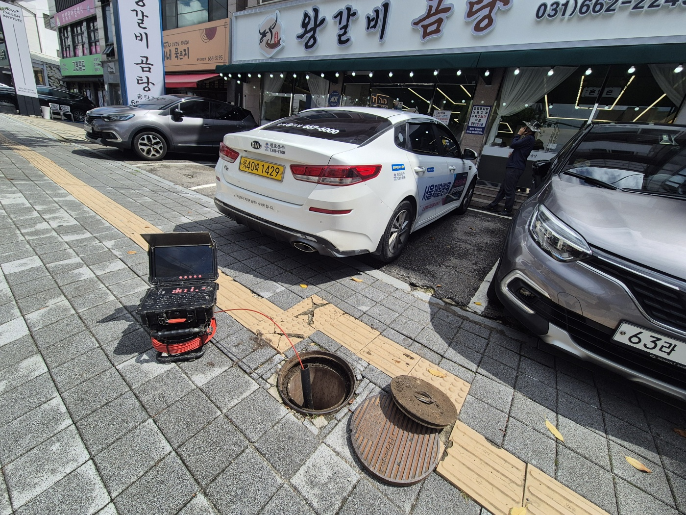
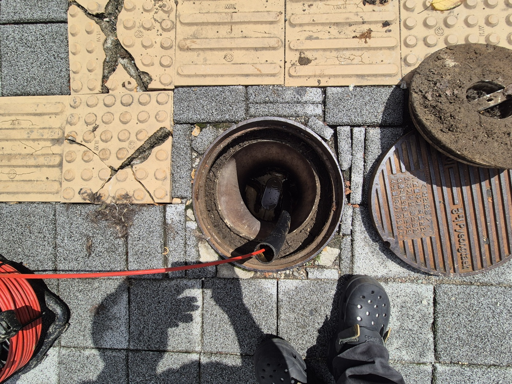
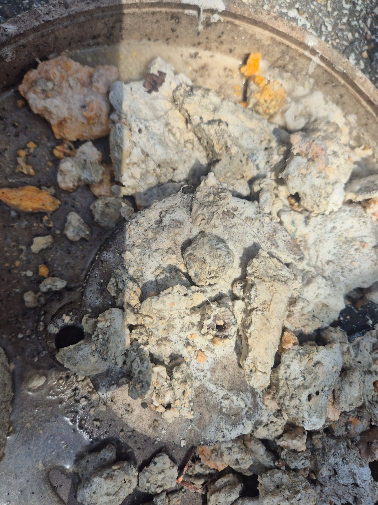
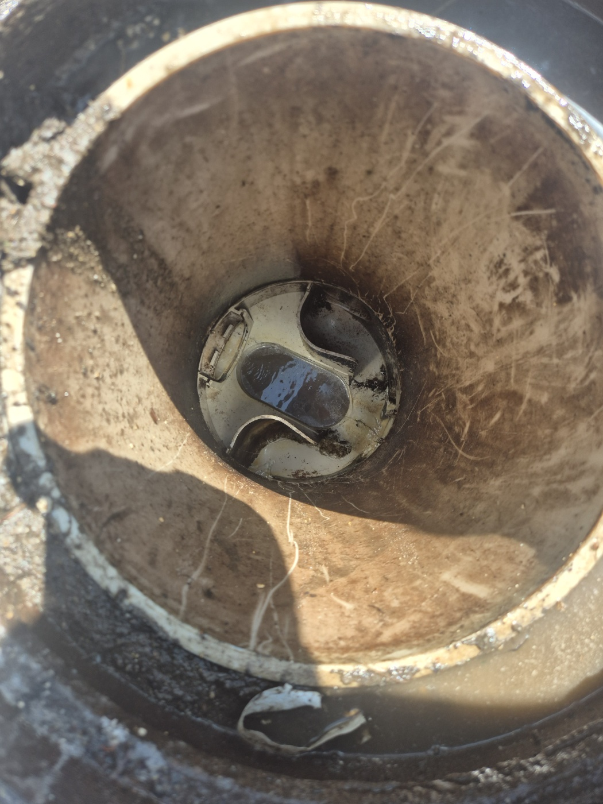

안녕하세요.. 고고고 설비입니다.. 오늘은 평택시 송탄에 있는 음식점에서 하수구가 역류한다는 신고를 받고 다녀온 현장입니다.
가게 앞 도로에 있는 맨홀부터 열어서 배관 상태를 확인했습니다. 내시경 장비를 세워두고 맨홀 안쪽으로 고압 호스를 밀어 넣기 시작했어요.

맨홀 벽면을 살펴보니 하얗고 딱딱하게 굳은 스케일과 기름때가 두껍게 눌어붙어 있었습니다. 음식점 하수가 오래 흘러들며 쌓인 것으로 보였어요.

고압 호스로 맨홀과 배관 안쪽을 반복해서 세척하며 굳은 이물질을 하나씩 제거했습니다.
작업을 마치고 맨홀 아래쪽 배관 연결부까지 확인해보니, 역류 없이 물이 잘 빠지는 걸 확인할 수 있었습니다.

음식점 앞 맨홀은 기름때와 스케일이 쌓이기 쉬운 만큼, 정기적인 고압세척으로 역류를 미리 예방하시는 걸 권해드립니다.
고고고 설비는 주택, 아파트, 원룸, 상가, 공장의 생활 하수 오수 배관을 관리해 주는 업체입니다. 고고고 설비에 전화 주시면 친절상담 정확한 진단 확실한 해결로 보답해 드리겠습니다!!